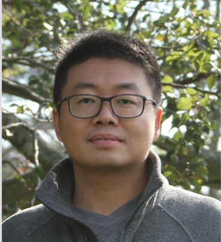

| Shuchu Han Senior Associate Researcher NEC Lab America Princeton, NJ shuchu.han@gmail.com 韩树初 |
 |
|
Bio I am now a Senior Associate Researcher at the Data Science Group of NEC Lab America. I received my B.Eng in Information Engineering from Xi'an Jiaotong University and my Ph.D in Computer Science from Stony Brook University, under the supervision of Hong Qin. During my PhD study, I was fortunate enough to work with Steven Skiena, Leman Akoglu and Yifan Hu. This is my CV and Google scholar. My personal research interests include large scale graph representation, clustering, streaming and online algorithms, machine learning and graph mining. I am especially fond of graph related algorithms. Manuscipts in Progress: Automatically Redundant Features Removal for Unsupervised Feature Selection via Sparse Feature Graph Shuchu Han, Hao Huang, Hong Qin Arxiv 2017 Conference Publications: Generating Look-alike Names via Distributed Representations Shuchu Han, Yifan Hu, Steven Skiena, Baris Coskun, Meizhu Liu Yahoo Tech Pulse 2016 A Greedy Algorithm to Construct L1 Graph with Ranked Dictionary Shuchu Han, Hong Qin PAKDD 2016 Structure Aware L1 Graph for Data Custering, (Student Abstract) Shuchu Han, Hong Qin AAAI 2016 Where Graph Topology Matters: The Robust Subgraph Problem Hau Chan, Shuchu Han, Leman Akoglu, Best research paper at SDM 2015 Locality-Preserving L1-Graph and Its Application in Clustering Shuchu Han, Hao Huang, Hong Qin, Dantong Yu SAC 2015 An Improved Ratio-based (IRB) Batch Effect Removal Algorithm for Cancer Data in a Co-analysis Framework Shuchu Han, Hong Qin, Dantong Yu Best student paper at ICBB 2014 Parameterization of Star Shaped Volumes Using Green's Functions Jiazhi Xia, Ying He, Shuchu Han, Chi-Wing Fu, Feng Luo, Xianfeng Gu GMP 2010 Hexahedral shell mesh generation by volumetric parameterization Shuchu Han, Jiazhi Xia, Ying He SPM 2010 Direct-Product Volumetric Parameterization of Handlebodies via Harmonic Fields Jiazhi Xia, Ying He, Xiaotian Yin, Shuchu Han, Xianfeng Gu SMI 2010 Journal Publications: A Greedy Algorithm to Construct Sparse Graph by Using Ranked Dictionary Shuchu Han, Hong Qin JDSA 2016 Constructing Hexahedral Shell Mesh via Volumetric Polycube Map Shuchu Han, Jiazhi Xia, and Ying He. CAD 2011 Tutorials: Sparse Graph Representation and Its Applications PhD Thesis. See also Talk slides. (under construction) |